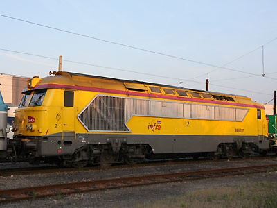

Les A1A-A1A 68000 et 68500 version 
Stéphane Froger a réalisé un pack de A1A-A1A 68000 et 68500 en livrée bleue de différentes époques et Fret.
A1A-A1A 68000 - 68500
Les A1A-A1A 68000 et 68500 sont des locomotives Diésel-électriques de ligne. Livrées en même temps que les BB 67000, elles avaient pour but de tirer les express et les trains de marchandises lourds.
Les 68000 et 68500 diffèrent par leur motorisation. Un moteur Sulzer 12 LVA 24 pour les 68000 et un moteur SACM AGO V12 DHSR pour les 68500. Au cours de leur carrière, plusieurs machines ont été remotorisées et ont basculé d'une série à l'autre. Les moteurs électriques sont alimentés par une génératrice à courant continu.
Ces machines reposent sur des bogies à trois essieux dont l'essieu central n'est que porteur. Un système réglable de répartition des charges permettait, sur les lignes de bonne qualité, de répartir le maximum de charge sur les essieux moteurs pour améliorer l'adhérence. Et sur les lignes plus faiblement armées, de répartir la charge linéique.
Ces machines disposaient d'une chaudière à vapeur pour chauffer les rames voyageurs, déposée depuis le cantonnement de la série à des activités Fret.
De ces deux séries, seule subsiste la A1A-A1A 68081 utilisée par le Matériel, restaurée et promise à la collection de la Cité du Train. Pourtant, plusieurs 68500 avaient récemment bénéficié d'une belle livrée jaune Infra.
Quelques données techniques
Constructeur : Compagnie des Ateliers et Forges de la Loire
Pour plus d'info :
Les fiches A1A-A1A 68000 et A1A-A1A 68500 sur Wikipedia
Fiche technique des A1A-A1A 68000-68500 de Florent Brisou
L'inventaire des A1A-A1A 68000 et A1A-A1A 68500 sur Trains du Sud-Ouest
Fin de parcours pour les A1A-A1A 68078 et 74 à Sotteville-lès-Rouen (02/08/2005)
La A1A-A1A 68081 restaurée, à Dijon (14/05/2010)
La A1A-A1A 68540 préservée par l'AAATV Centre, à Montluçon (23/06/2012)

La A1A-A1A 68537 Infra à Villeneuve (26/06/2010)
Les A1A-A1A 68000 et 68500 version 
Stéphane Froger a réalisé un pack de A1A-A1A 68000 et 68500 en livrée bleue de différentes époques et Fret.